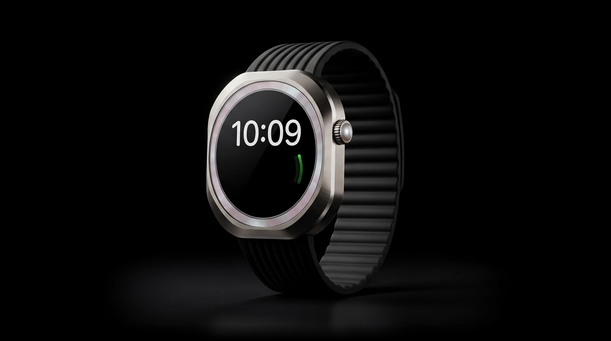
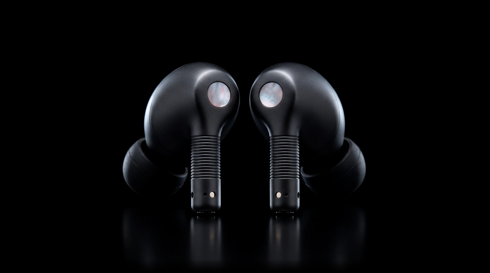

One pearl. Three ways to carry it.
FaroPulsoOnda
The light that stays on.
From ₹1,19,900
Learn moreBuy

Three days off the grid.
From ₹79,900

The world, turned down.
From ₹24,900
Real mother-of-pearl, cut from shell. No two are ever quite alike.